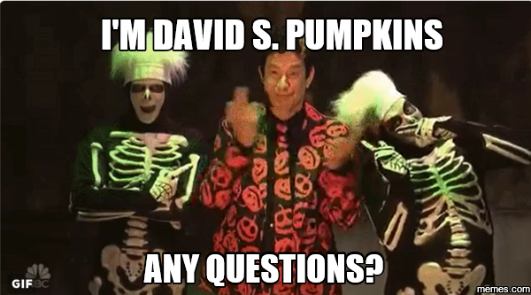

install.packages("rmarkdown", type = "source")We’ve updated our R Markdown website tutorial to depend on RStudio for simplicity. You can find our previous version if you would rather not depend on RStudio.
Setup
Today, more than ever, a website is like a business card. As a graduate student or academic, by having a nice website you are not only providing a one-stop-shop for all of your necessary information, AND you are illustrating that you have the technical prowess to accomplish this! üí™ üë©‚Äçüíª you are showing that you are savvy enough to know the importance of a high-quality web-presence.
Examples
- Check out Lucy’s entirely made in R Markdown personal website!
- The sample website made in this tutorial is available here.
Prerequisites
Get a GitHub account! 1. GitHub account
What is R Markdown you ask? 2. Working knowledge of R Markdown.
Download RStudio! 3. RStudio
4. Collection of all the reasons your awesome! Sometimes it feels a bit üò¨ to list your accomplishments, but be loud and proud on your personal website!
Goals
By the end of this (hopefully) you will have,
- constructed a simple website with basic information about yourself,
- hosted it to GitHub for the world to access,
- have enough knowledge to know what to google to make it better.
Okay, let’s get started.
Step 1: Git on with it
First things first, let’s set up our GitHub repository for hosting this site.
“Hosting this site”?
Whenever you go to a website, e.g. www.vanderbilt.edu, your computer is sending out a request across the series of tubes known as the internet to a server sitting on top of some cloud somewhere (aka Indiana) that it would like to look at Vanderbilt’s website. That server, which is simply another computer, receives the request, then goes into its hard drive and pulls up the file it has stored for vanderbilt.com and sends that file back to your computer. So when we say “host your site” we simply mean we need to find a server to put your website’s files on that will then deliver those sites to people who want to see them via their web browser of choice.
This all sounds very complicated and expensive, and it used to be, but now computation is so cheap that companies literally give away server space to people all the time. One example of this is GitHub. Every time you host a repository on GitHub it is stored on a server for access.
Create Repo
Click the plus icon in the upper right corner of your GitHub page and select “New repository”. If you’d like this to be your main website, name this repo yourgithubname.github.io for example, Nick’s would be nstrayer.github.io, Lucy’s would be lucymcgowan.github.io, etc.
On the top, you should see a box with your Repository’s URL. Hover over the clipboard icon to copy this URL.
Keep this on your clipboard, we are going to use it in just a minute!
Step 2: RStudio magic ✨
Open RStudio and select “New Project” under the “File” menu item. If you are having some trouble here, check out Jenny’s delightful Happy git with R tutorial. A New Project box should pop up - click “Version Control”.
Now click “Git”.
Paste your git repo link in the “Repository URL” dialogue box. (If it is no longer on your clipboard, navigate back to GitHub and select “Clone or download” and copy the link again).
Click ‚ÄúCreate Project‚Äù üéâ. Okay good! Now we have a repo and an RStudio project setup. Now let‚Äôs actually get a website on it!
Step 3: Start your Markdowns!
First we do some administrative work to make sure we don’t run into roadblocks on the way. These steps all take place within the RStudio project we just created! Let’s update our rmarkdown package to make sure we actually have the version that supports R Markdown websites.
Next we need to create a couple empty files inside your repository.
- Under “File” select “New File” then “R Markdown” - save this file as “index.Rmd”.
- Under “File” select “New File” then “R Markdown” - save this file as “about.Rmd”.
- Under “File” select “New File” then “Text File” - save this file as “_site.yml”.
We will start by filling out the yml file. yml files, while confusing looking at first, are basically a road map for R to know how to assemble your website.
_site.yml
name: "personal-website"
output_dir: "."
navbar:
title: "Personal Website"
left:
- text: "Home"
href: index.html
- text: "About Me"
href: about.htmlNext we will fill out the bare minimum for the .Rmd files.
index.Rmd
---
title: "Personal Website"
---
Hello, World!about.Rmd
---
title: "About Me"
---
Why I am awesome. If you got lost at any point during this tutorial, you can download a template of these files from Lucy’s GitHub.
Step 4: Let’s build it!
Okay, one last step to actually have a functioning website. We need to actually turn these separate files into a single cohesive website. Simply run the following within your RStudio project.
rmarkdown::render_site()Now if everything has gone according to plan, you should get a bunch of unintelligible output followed by the message : Output created: index.html.  If so, yay üôå, if not, double check all the stuff above to make sure you followed it exactly. Or more likely I messed up and you should inform me.
If so, yay üôå, if not, double check all the stuff above to make sure you followed it exactly. Or more likely I messed up and you should inform me.
Now we can open it up. Open the repository with finder or whatever tool your computer uses to look at files, then click on index.html and hopefully you should get something that looks like this.
Sweet. You have now created your own personal website. First let’s push it to GitHub and then we can get down to making it good for you.
Step 5: Git it hosted
Emoji tip: You can include emoji in your git commit messages by keyword - checkout this list üéâ üçª üêìNow we just have to add commit and push everything to GitHub. In the upper right corner of RStudio, you should see a ‚ÄúGit‚Äù tab. Click the ‚ÄúCommit‚Äù button. The following box should pop up.
If you are having trouble with this step, take a üëÄ at Jenny‚Äôs lovely Happy git with R. Click all of the files to stage them, type a commit message, and then click ‚ÄúCommit‚Äù. The click the green up arrow to push the commit to GitHub.
Choose your own adventure
I am updating a bit based on Yihui‚Äôs comment - it sounds like the cool kids are using Netlify now üòé!
Now that your site is on GitHub, you have some hosting options - you can either host it on GitHub, or another hosting site.
Host on Netlify
Hosting on Netlify is actually quite simple! Just bop over to https://www.netlify.com, sign in with GitHub, and choose the Repository you’ve just pushed your site to. You should see a dialogue box - just click “Deploy Site” and all will be well!

For a more detailed explanation, Yihui has a great section in his book. You can update your site’s name by clicking “Change site name” - if you are using the free plan, it will append .netlify.com to the end. For example, I have put this example site on http://lucys-personal-site.netlify.com/.
A clear added benefit of using Netlify is the HTTPS support - so be sure to enable that!
Host on GitHub
Return to your GitHub repository in the browser. Click on the “Settings” tab.
Scroll down to the “GitHub Pages” header. Under “source” select “master branch” and then click “Save”.
Now we can navigate to our hosted site! Open your browser of choice and go to www.<your github name>.github.io/<your sites repo name>. (E.g. www.lucymcgowan.github.io/personal_site).
Note: GitHub has to build stuff on its end so it may take a minute or so for stuff to show up. Just keep impatiently refreshing the page and it will go faster.
Yay, it works. Now we can make it better.
Show the world who you are
You know how to use R Markdown. So basically everything that you know how to do you can do here.
Like let’s say you want to make your about page more descriptive.
about.Rmd
---
title: "About Me"
---
- __Name:__ Nick
- __Ocupation:__ "Student"
- __Hobbies:__ Learning software development instead of studying for exams.
Here is a super cool photo of me doing one of my favorite things, yawning.
Now just rebuild your site by running rmarkdown::render_site() again and open index.html again to see if it worked. Ideally now you should be able to click on your about page and see the new results!

Oh my, that photo looks mighty large. Perhaps we want to make it smaller. We can do that, by adding a special styling file called a css file. Create a new “Text file” in RStudio named “style.css” and add the following lines:
style.css
img {
width: 400px;
display: block;
margin: 0 auto;
}This takes every image that appears on our site and makes them 400 pixels wide and centers them. You can change these parameters as you want. There are infinitely many ways to customize the style of a website using css. For more information try googling how to <do something> with css and you will most likely find 10,000 ways to do it.
Now just add the following lines to your _site.yml file to apply this css to your site.
_site.yml
name: "nicks-website"
output_dir: "."
navbar:
title: "Nicks Website"
left:
- text: "Home"
href: index.html
- text: "About Me"
href: about.html
output:
html_document:
theme: flatly
css: style.cssWe have done a few things here. One we have created the new output field. We have given it a theme (you can choose from any you desire here) and we have added our custom css file to the whole thing as well.
Once again, run rmarkdown::render_site() to checkout how things have changed.
Looking a lot better.
Maybe you‚Äôre not ü§∑‚Äç‚ôÄ ‚Ķwe made this originally for our department. You are a biostatistician however, so how about we try and show that off.
Add Projects/ other links
Let’s make a page with links to your cool (open) projects.
Again we edit the _site.yml file…
_site.yml
name: "nicks-website"
output_dir: "."
navbar:
title: "Nicks Website"
left:
- text: "Home"
href: index.html
- text: "Projects" ##### the new
href: projects.html ##### stuff
- text: "About Me"
href: about.html
output:
html_document:
theme: flatly
css: style.cssAdd another file called projects.Rmd (you know how to do this at this point).
projects.Rmd
---
title: "Projects"
---
Sometimes I like to do projects and then post them on the internet for the whole world to benefit!
here's some examples.
## [Data Visualization in R](http://nickstrayer.me/visualization_in_r/)
- An RMarkdown presentation on the common mistakes made in visualization and how to fix them.
- Includes a GitHub repo for access to all the code.
- Look at how high quality my work is, hire and or collaborate with me.
## [Statistical Plots](http://bl.ocks.org/nstrayer/37a503dd1db369a8f7e3ce21757e19ee)
- Interactive plots of things
- I can code!Again, build the site with your build script and then take a look at what you have!
So what now?
Well first off you add, commit, and push all your new fancy changes to GitHub.
Now you have a website that is better than 95% of people in your situation. What do you do now?
You never stop making it better! Every new project you get you do you post it to your projects page, get sick new head shots in? Add that to your about page. Customize it. For instance you may want to add a splash of personalization to your main page. Perhaps a nice chart? Ever made a plot in an R Markdown before? You know how to do it then.
index.Rmd
---
title: "Nick's Website"
---
__Look at how cool this plot is!__
$$Y = \alpha \cdot \sin(X), \alpha = 0,0.1,0.2,...,3$$
## Remove # before ticks to get this to work.
#```{r, echo = FALSE, fig.align='center'}
library(tidyverse)
cool_function <- function(x, alpha) return(sin(alpha*x))
xs <- seq(0, pi*1.5, 0.005)
ys <- cool_function(xs, 1)
results <- data_frame(xs, ys, alpha = "1")
for(alpha in seq(0,3, 0.1)){
results <- results %>%
bind_rows(data_frame(
xs,
ys = cool_function(xs, alpha),
alpha = as.character(alpha)
))
}
ggplot(results, aes(x = xs, y = ys, color = alpha)) +
geom_line() +
theme_bw() +
theme(legend.position="none")
#```
Everyone likes a good chart.
Afterward
Learn More
If you want to learn more about what’s possible using R Markdown sites (and there is a lot), a good starting place is this document hosted by RStudio. This is where I got almost everything for this.
Style
This is rather personal, but as for the style: keep it as simple as possible. The simpler your website the less overwhelming it is to viewers. Try and convey everything that you need to and nothing more. That being said, personal flourishes do sometimes help set you apart from others. It’s a balancing act.
Questions 
If this tutorial was confusing or you don’t know what words to use to search for new stuff feel free to contact us.